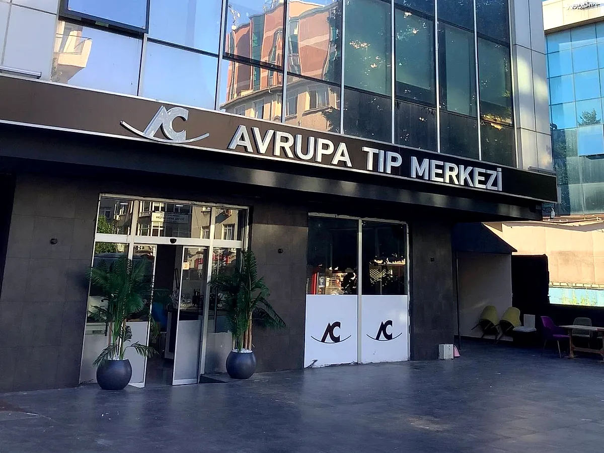

Kardiyoloji
Kardiyoloji
1998'den beri Bakırköy'de
Sağlıkta güvenin adresi — randevunuz bir telefon uzağınızda.
14 branşta uzman kadro, aynı çatı altında laboratuvar ve görüntüleme. Tahlilinizi verdiğiniz gün sonucunuzu alın, hekiminizle aynı gün değerlendirin.
14Tıbbi birim
26Uzman hekim
27Yıllık deneyim
SGKve tamamlayıcı sigorta

Bugün müsait misiniz?
Aynı gün randevu bulunabilir · Muayene öncesi ödeme yok
Aynı gün randevu bulunabilir
Rutin tahlilde ~2 saatte sonuç
Sağlık raporları aynı gün teslim
2 saat ücretsiz kapalı otopark
Hızlı işlemler
01
Randevu almak istiyorum
Branş ve hekim seçerek saat belirleyin.
Randevu al 02Şikâyetim var, nereye gideceğim?
İnteraktif sihirbazla doğru birimi bulun.
Sihirbazı başlat 03Sağlık raporu almam gerekiyor
İşe giriş, ehliyet, sporcu, evlilik raporu.
Rapor işlemleri 04Nasıl gelirim, nereye park ederim?
Marmaray, metrobüs ve otopark bilgisi.
Yol tarifi
Tıbbi Birimler
Tüm birimler
Aynı çatı altında 14 branş
Muayene, tahlil ve görüntülemeyi tek ziyarette tamamlayın; birimler arası yönlendirme merkez içinde yapılır.
Kardiyoloji
EKG, efor testi, ekokardiyografi, ritim Holter
İnceleİç Hastalıkları
Genel dahiliye, tiroid, diyabet, check-up
Çocuk Sağlığı
Büyüme takibi, aşı, çocuk beslenmesi
İnceleKadın Hastalıkları
Jinekolojik muayene, gebelik takibi, USG
İnceleOrtopedi
Eklem ağrıları, spor yaralanmaları, PRP
Genel Cerrahi
Fıtık, safra kesesi, tiroid, meme sağlığı
İnceleGöz Hastalıkları
Görme kusuru, göz tansiyonu, retina
İnceleKulak Burun Boğaz
Sinüzit, işitme testi, geniz eti
İnceleDermatoloji
Cilt hastalıkları, ben kontrolü, saç dökülmesi
İnceleLaboratuvar
Kan, idrar, hormon ve biyokimya tetkikleri
İnceleGörüntüleme
Röntgen, ultrason, doppler, mamografi
İncelePsikoloji
Yetişkin ve çocuk danışmanlığı, test uygulama
İncele
Aynı Gün Teslim
Sağlık raporunuzu tek ziyarette tamamlayın
Muayene, tahlil, işitme ve görme testi merkez içinde yapılır; raporunuz aynı gün elinize geçer. Randevu almanıza gerek yok, sıra bekleme süresini telefonla öğrenebilirsiniz.
Rapor işlemleri ve gerekli belgeler
Hekim Kadromuz
Tüm hekimler
Hekiminizi tanıyarak randevu alın
Her hekimimizin eğitim geçmişi, uzmanlık alanları ve çalışma günleri profilinde açıkça yer alır.
Kardiyoloji
 Kadın Hastalıkları
Kadın Hastalıkları
 Genel Cerrahi
Genel Cerrahi
 Çocuk Sağlığı
Çocuk Sağlığı
Neden Avrupa Tıp Merkezi
Zincire gitmeden, semtinizde tam donanım
Büyük hastanelerin sıra ve mesafe yükü olmadan, tıp merkezi ölçeğinde kişisel ilgi.
01
Aynı gün sonuç
Rutin biyokimya ve hemogram tetkikleri merkez laboratuvarımızda çalışılır, sonuçlar ortalama 2 saat içinde hekiminize ulaşır.
02
SGK ve tamamlayıcı sigorta
SGK anlaşmamız ve 12 tamamlayıcı sağlık sigortası anlaşmamız bulunmaktadır. Kapsam sorgusunu telefonla yapabilirsiniz.
03
Tek binada tüm süreç
Muayene, kan alma, ultrason ve röntgen aynı katlarda. Birimler arası yönlendirmede kayıt bilgileriniz tekrar istenmez.
Sağlık Rehberi
Tüm yazılar
Hekimlerimizin kaleminden
Tüm içerikler ilgili branş hekimi tarafından yazılır ve güncellenir.
Kardiyoloji
Prof. Dr. Selim Arıkan · Güncelleme: 19.07.2026
İç Hastalıkları
Uzm. Dr. Elif Kavaklı · Güncelleme: 20.07.2026
Çocuk Sağlığı
Uzm. Dr. Ayşe Tuna · Güncelleme: 20.07.2026
Tansiyon değerleri: hangi aralık normal?
Büyük ve küçük tansiyonun ne anlama geldiğini, evde doğru ölçüm tekniğini ve hekime başvurulması gereken durumları anlatıyoruz.
Prof. Dr. Selim Arıkan · Güncelleme: 19.07.2026Check-up'a aç mı gidilir? Hazırlık rehberi
Açlık süresi, ilaç kullanımı ve tahlil öncesi yapılmaması gerekenler hakkında pratik bilgiler.
Uzm. Dr. Elif Kavaklı · Güncelleme: 20.07.2026Okul çağında tekrarlayan boğaz enfeksiyonları
Sık geçirilen enfeksiyonlarda hangi tetkikler istenir, ne zaman uzman görüşü gerekir?
Uzm. Dr. Ayşe Tuna · Güncelleme: 20.07.2026
Bize Ulaşın
Bakırköy meydanına yürüme mesafesinde
Toplu taşımayla kolay ulaşım, merkeze ait kapalı otopark.
-
Marmaray Bakırköyİstasyondan 6 dakika yürüme mesafesi
-
Metrobüs İncirli / ZuhuratbabaDuraktan 4 dakika, düz yol
-
Kapalı otoparkHasta ve refakatçilere 2 saat ücretsiz
-
Çalışma saatleriHafta içi 08:30–20:00 · Cumartesi 09:00–17:00
Anlaşmalı Kurumlar
SGK ve tamamlayıcı sağlık sigortaları
Poliçenizin kapsamını randevu öncesi telefonla teyit edebilirsiniz.
SGKAllianzAnadolu SigortaAxaMapfre
Türkiye SigortaGroupamaHDIRay SigortaNeova
Randevu
Üç bilgi yeterli, gerisini biz arıyoruz
Formu doldurun, çalışma saatleri içinde 15 dakika içinde sizi arayarak size uygun saati birlikte belirleyelim. Dilerseniz doğrudan telefonla da randevu oluşturabilirsiniz.
Talebiniz alındı
Çalışma saatleri içinde 15 dakika içinde sizi arayacağız.